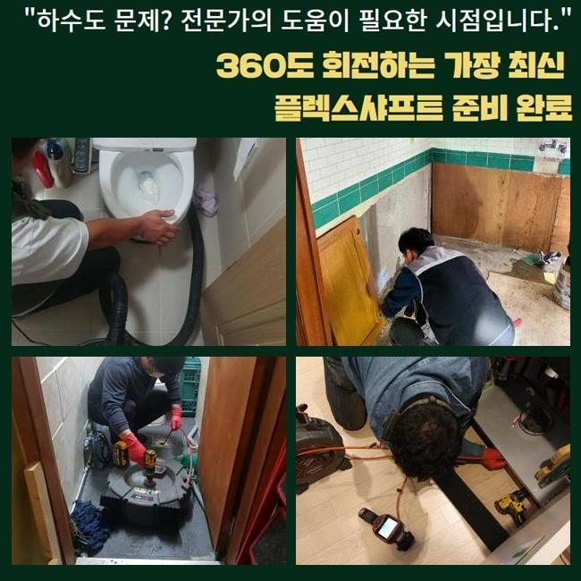
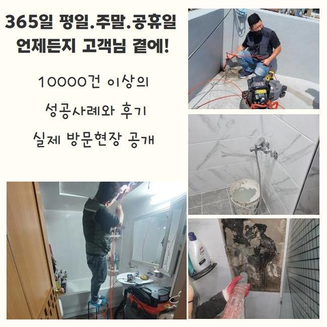
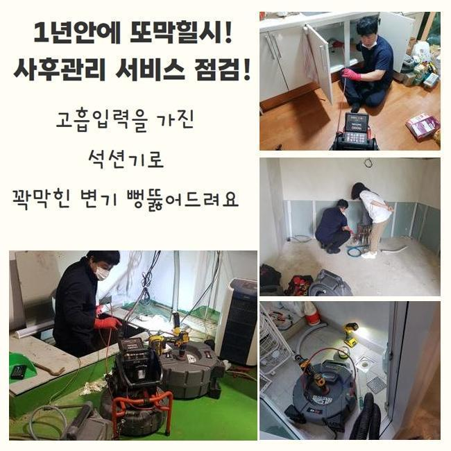
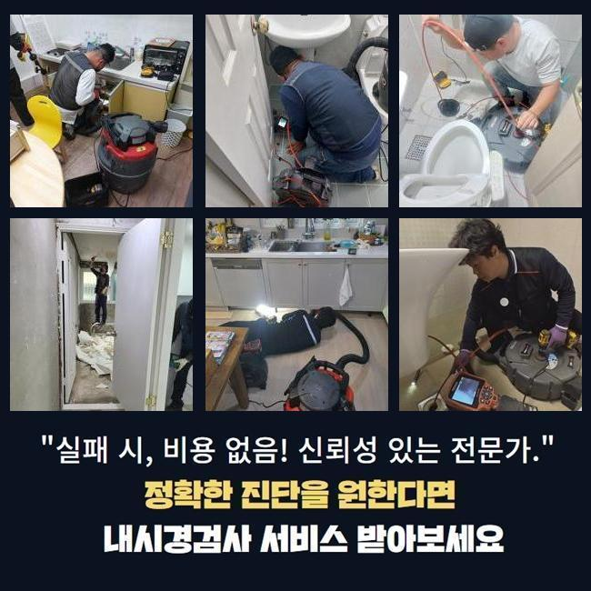
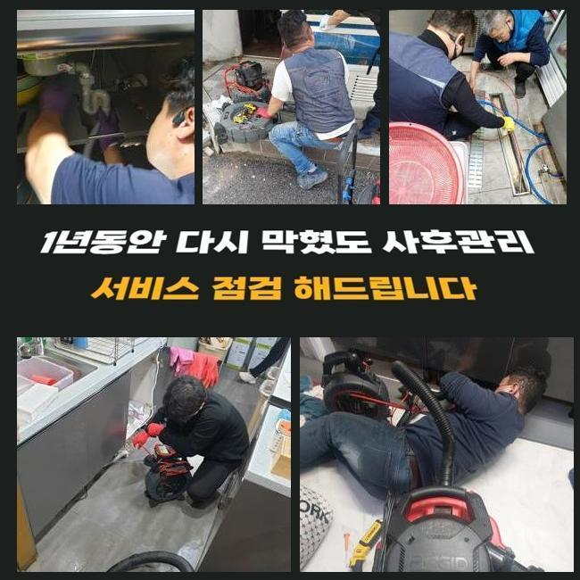
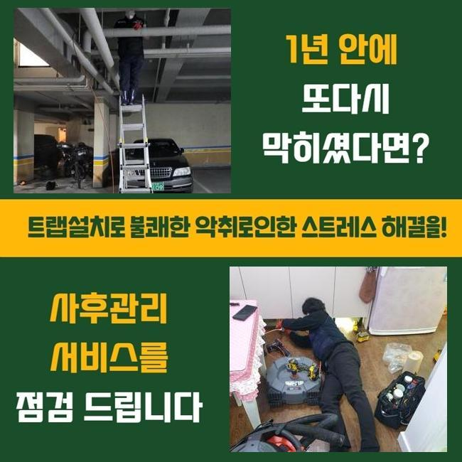
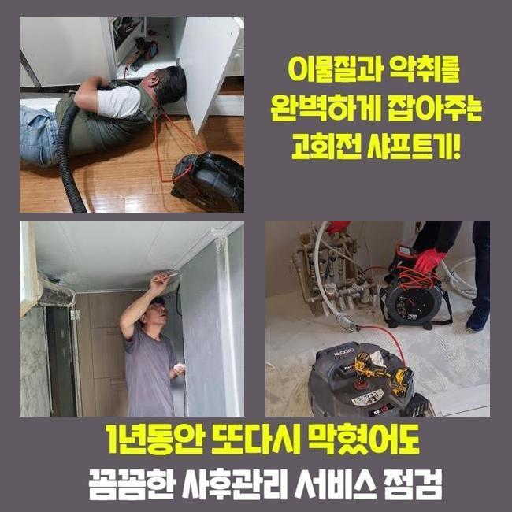

🏠 안산 와동하수도역류 백운동 맨홀막힘 누수탐지
안산 싱크대막힘 전문 시공 후기

📋 작업 개요
- 위치: 안산
- 서비스 유형: 싱크대막힘, 하수구막힘, 배관막힘, 맨홀막힘, 집수정막힘, 누수수리, 역류해결, 뚫는업체, 배관청소, 고압세척, 악취차단
- 작업 일시: 2025. 2. 3. 2:34
- 업체명: 하수구수사대 (010-5615-2118)
🔍 문제 상황
안산 와동하수도역류 백운동 맨홀막힘 누수탐지
하수구가 막혔을때 단순하게 끝난다면 문제없지만 방치할경우 막대한피해로 불거질수가 있습니다
신속히 대응한다면 좋지만 혹여나 방치하신다면 업체를통하여 막힌배관을 해결해보시길 바래요
오늘 내방했던 현장장소는 상가건물로 이루어져 있었는데 하수관이 막혀서 빠른 출동을 요청하셨죠
이런 문제들이 발생하면 급급한 상황들이 대부분이니 1시간 안팎으로 방문드려요
상가건물안 식당쪽에있는 주방부분에서 막힘문제가 일어난 것인데요
하루지나고 영업이 이루어져야 하므로 곤란해하시는 상황이었어요
막히게된 연유가뭔지 알아내기 위하여 서둘렀어요
외부쪽에있는 하수구와 부엌내부를 살핀결과 트렌치부터 메인배관도 막혀버린 상황이었죠
현재상황이 어떠한지 고객분께 전달드리고나서 수리에 착수하기로 했는데요
작업진행전 필수로 의뢰자분께 작업과정과 관련해 설명드립니다

🔎 원인 분석
💡 전문가 진단: 정밀 진단 장비를 사용하여 슬러지의 고착 여부를 판명하고 타격/세척 작업을 실시했습니다.
플렉스샤프트기로 내부속에 쌓여있는 잔해물을 꺼냈는데요
식당이다보니 기름기가 상당량으로 쌓인 상태였습니다
강도를 조절하며 배관내부에 이물질을 없애줬어요
수리중간에 정상적으로 제거과정이 이루어지는지 하수구카메라로 체크해가며 진행했답니다
역류하고있던 하수구였으므로 가능한 서둘러서 손상이 일어나지 않게끔 배관세척을 해주었는데 또 다른 피해가없이 역류문제를 해결하여 안심했죠
외부배관을 작업한뒤 주방내부쪽으로 이동했습니다
식당내부에 있는 씽크대쪽이 막혔다고 하여 하수구카메라를 써서 막힌이유에 대해 분석을 진행해주었는데요
점검해보니 기름기들이 석회화되어 막히게된걸로 판단되었습니다
석회물을 없애기위해 플렉스샤프트로 분쇄시켰어요
이후엔 남아있는 오염물을 흡입기로 빨아들여주는 단계별 작업착수로 기름슬러지가 깔끔하게 제거되었네요
이러한 문제가 발생되는것은 여러원인을 통하여 발현되지만 확실한원인은 배관속에 이물이 유입되어 막히는것이 대부분이죠

🔧 작업 과정
이렇기때문에 각종 오염물이 들어가지않도록 신경써야하고 정기적으로 배관상태를 점검하셔서 상태에 대한 부분들을 체크해야해요
긴시간 작업하며 트렌치내에 잔존되었던 기름잔해와 오염물질들을 처리할수있었죠
집수정쪽도 마찬가지로 막힘현상이 있는걸 알아냈어요 오염물이 한곳으로 모이는 하수구이므로 단순한 기계로는 해결하기란 어려운까닭에 고압세척기가 필요했어요
이와 관련해 고객께 동의를얻은뒤 고압세척을 진행해야하는 필요성에 대하여 상세하게 일러드렸어요
고압청소의 경우엔 강한압력이 이용되므로 작업자는 주의해서 작업하는것이 필요하겠습니다
잘못건드릴시 배관내벽에 균열이생기며 2차피해로 연결될 가능성이 있어요
집수정내에 기름이물이 쌓여있어 높은 압력의 물을쏴서 많은 이물질들을 밀어내면서 제거해주었죠
내외부를 전체로 작업했더니 물빠짐이 원활하게 돌아온걸 살펴볼수가 있었습니다
상시로 운영되는 영업장소라면 막대한 경제적손해로 이어지므로 항시 조속하게 내방해 드리고있죠
씽크대배수구망 이라든지 냄새차단 트랩을통해 악취나 막힘까지 방지할수있어요
확실히 처리해내는 해결방법은 막힘징조를 보았을때 발견그즉시 전문인을 호출해 해결하는것이죠
앞전에 말씀드렸지만 문제를 방치하시면 역류나 누수같은 현상들로 이어진답니다
막힌배관을 뚫어보려고 셀프방법을 다방면으로 이용 하셨을텐데 가벼운 방법으로 처리하는 방법에대해 알려드리겠습니다
끓는물이나 하수구용액을 적절히 이용하여 하수구에 부어보고 해결이되지 못한다면 전문가를 호출해 도움을 받으셔야해요
과하게 시도한다면 하수구 손상문제가 일어날 확률도 있어 권장량으로 시도바랍니다
어느장소든 배관이 막히면 당황스러울 거에요
저희는 상가건물과 아파트 빌라등등 어떠한 장소든 방문해드립니다


✅ 작업 완료
작업을 진행할때 투명히 작업계획을 보여줘야 신뢰할수 있을겁니다
현장견적에 대하여 파악한후 뚫는비용을 자세히 일러드려요
현장상태마다 다르겠지만 간단히 석션기로만 처리될경우 오만원으로 책정하니 참고하세요!
이것말고도 궁금한부분이 있으면 시간구애없이 연락주신다면 상세한 상담으로 도와드리겠습니다
막히는문제 방치마시고 신속하게 처리하셔서 쾌적한 환경을 조성하시길 바랍니다




⚠️ 베란다 누수 및 방수 관리 방법
- ✅ 비가 많이 올 때 창틀 주변이나 아래층 천장에 얼룩이 생기는지 정기적으로 확인해 보세요.
- ✅ 우수관 주변 실리콘 마감이 들뜨거나 깨진 틈새가 있는지 손상 여부를 수시로 체크하세요.
- ✅ 베란다 바닥 타일의 줄눈(메지)이 소실되면 그 틈으로 물이 침투하여 누수가 유발됩니다.
- ✅ 누수 의심 증상 발견 시 방치하면 아래층 손실이 커지므로 즉시 전문가의 진단을 받으십시오.
💡 핵심 정리
- 확실한 장비 작업(내시경 점검 및 샤프트 스케일링)으로 원인을 뿌리 뽑습니다.
- 작업 후 1년 이내에 동일한 부위 재발 시 100% 무상 A/S 서비스를 보장합니다.
- 서울 · 경기 · 인천 전 지역에 24시간 언제든 긴급 출동할 수 있도록 항시 대기 중입니다.
❓ 자주 묻는 질문 (FAQ)
🚨 안산 싱크대막힘 문제로 고민이신가요?
정확한 원인 진단과 확실한 시공으로 재발 없는 해결을 약속드립니다.
24시간 긴급 출동 | 서울 · 경기 · 인천 전지역 | 1년 내 재발 시 무상 A/S